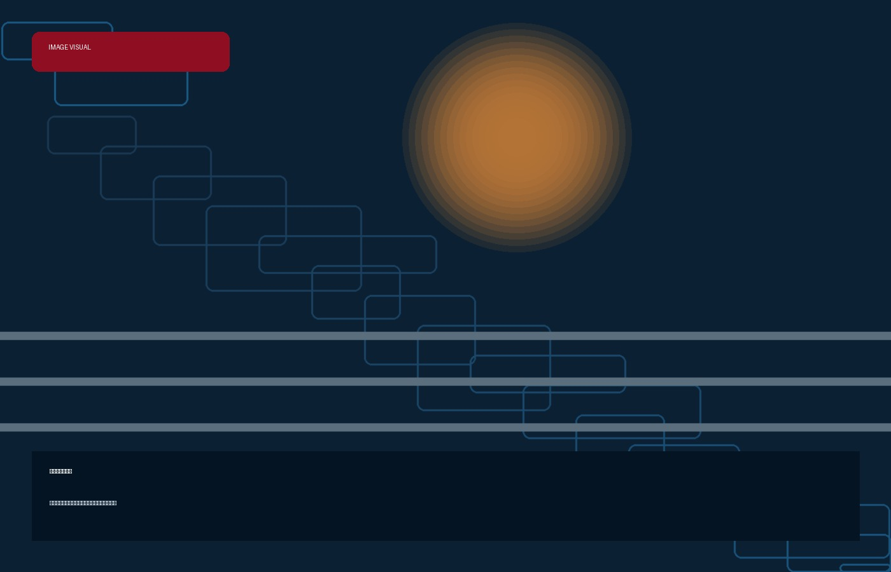
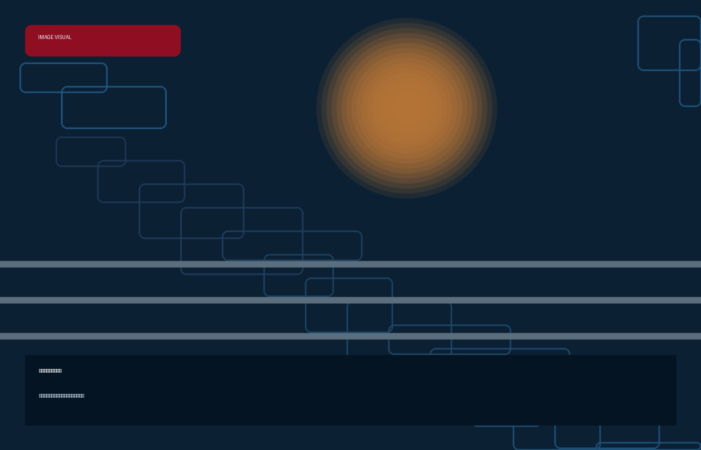
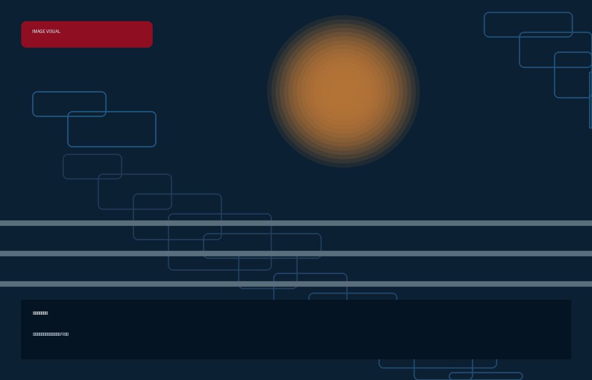
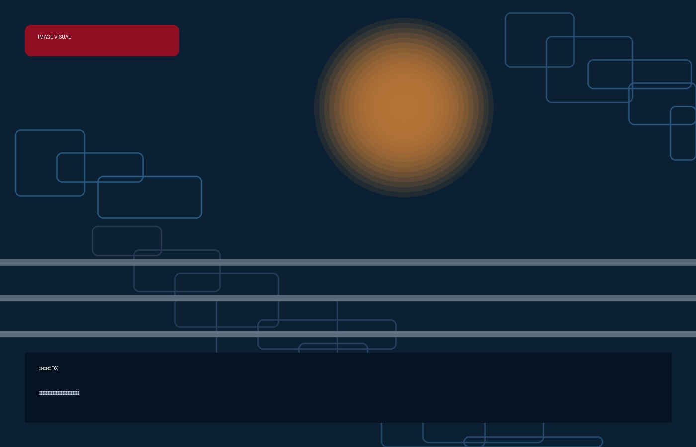
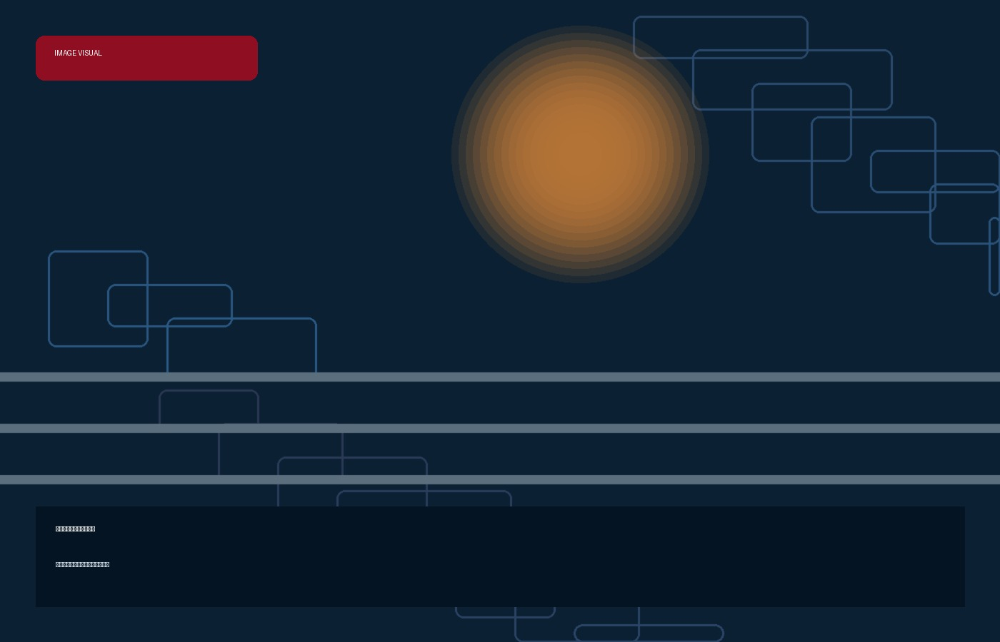
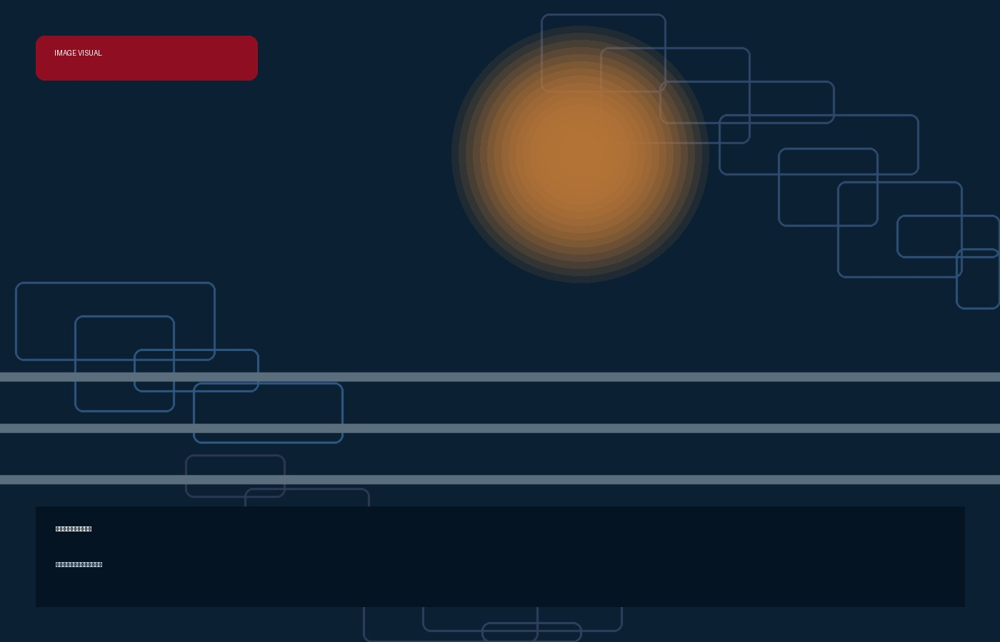
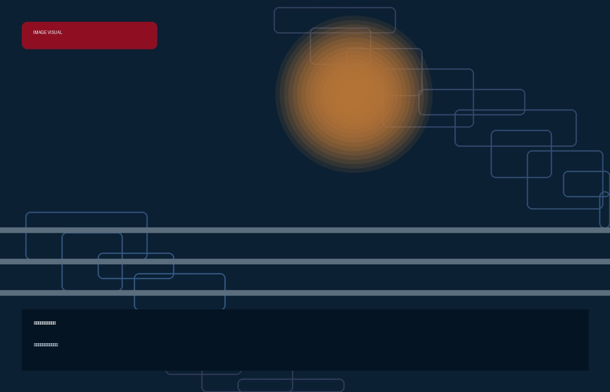
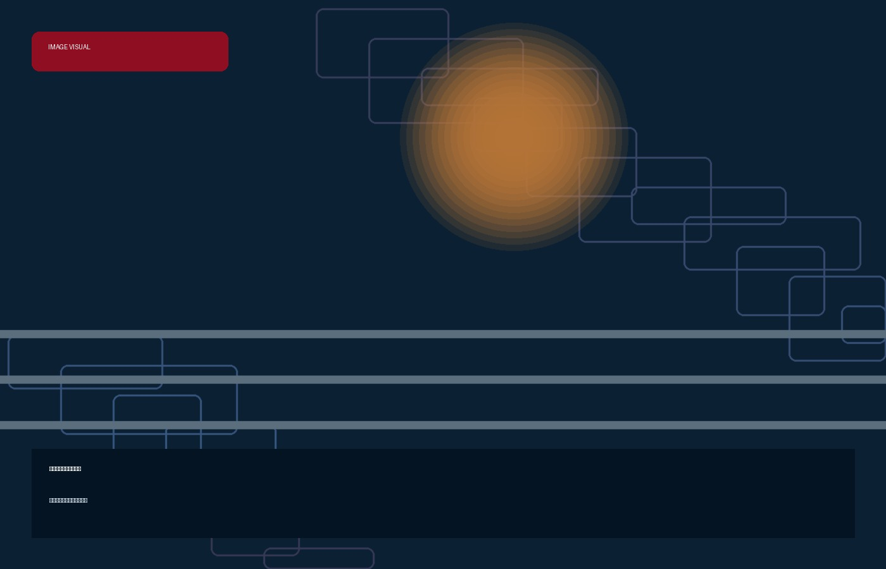
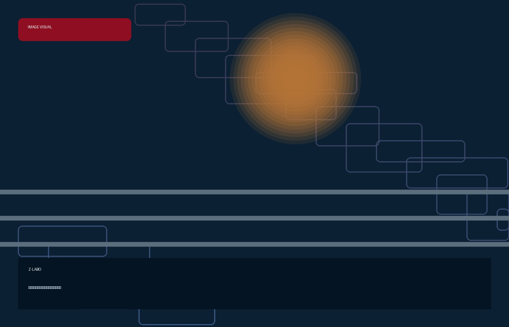

店舗・業態開発支援
市場調査、コンセプト設計、オペレーション設計、店舗導入に向けた支援を行います。
FOODSERVICE CONSULTING & DEVELOPMENT
Z-LABOは、飲食店の課題をテクノロジーと現場視点で解決する、コンサルティング・開発パートナーです。
※掲載写真・画像は事業内容を表現するためのイメージです。
ABOUT
飲食ビジネスの現場を理解し、技術とアイデアで課題解決を支援します。
Z-LABOは、製品開発コンサルティングを基盤に、飲食店・フードサービス企業の店舗運営、厨房、機器、オペレーション、DXに関する課題解決を支援します。現場調査から構想、試作、実証、導入まで一貫して伴走し、実際に使える仕組みづくりを重視します。
SERVICE
飲食ビジネスのさまざまな課題に対し、企画・設計から導入・運用改善まで一貫してサポートします。

市場調査、コンセプト設計、オペレーション設計、店舗導入に向けた支援を行います。

厨房レイアウト、作業動線、厨房機器の選定・比較・導入検討を支援します。

ロボット、搬送、センサー、AI等を活用し、人手不足や作業負荷の軽減を目指します。

業務の見える化、データ活用、システム連携、店舗DXの推進を支援します。

提供品質、作業性、再現性、生産性を踏まえた商品・メニュー開発を支援します。
※掲載写真・画像は事業内容を表現するためのイメージです。実際の導入事例・設備を示すものではありません。
STRENGTHS
店舗・厨房・オペレーションを一体で捉え、現場課題を整理します。
最新技術を導入するだけでなく、現場で使える形へ落とし込みます。
企画、試作、実証、改善、導入まで継続してサポートします。
省人化、生産性、品質、顧客体験など、目的に沿った成果を追求します。
SOLUTIONS

作業の自動化・省人化、動線改善、適正なオペレーション設計を検討します。

業務フローを整理し、標準化・仕組み化・デジタル化を支援します。

サービス、商品、提供スピード、店舗体験の改善に向けた提案を行います。
※掲載写真・画像はイメージです。
COMPANY
Z-LABOは、飲食ビジネスの未来を支える技術とアイデアを提供し、お客様の成長に貢献します。

※画像はイメージです。
CONTACT
店舗改善、厨房機器、省人化、自動化、DX、商品開発など、構想段階からご相談いただけます。